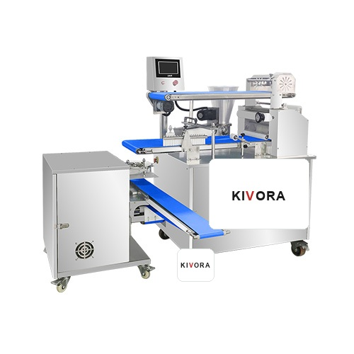

Hamur ve Unlu Mamuller
El Yapımı Tip Bao Makinesi
El Yapımı Tip Bao Makinesi, gıda üretimi, merkezi mutfak, restoran zinciri ve yemek fabrikası projeleri için NJ GROUP tarafından Türkiye pazarına sunulan profesyonel ekipman grubudur.
- İstanbul showroom ve proje görüşmesi
- Kapasiteye göre makine seçimi ve fiyat teklifi
- Kurulum, yedek parça ve satış sonrası destek